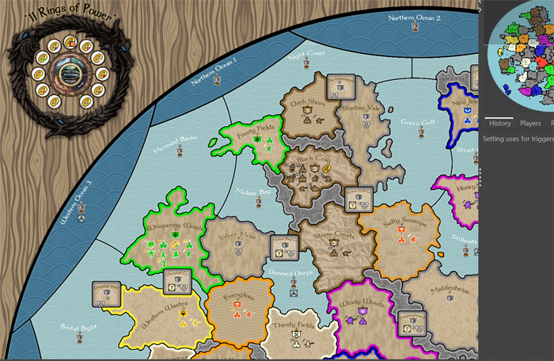

11 Rings of Power
by Ebbe (graphics/sound/testing) & TheDog (coding/testing)
INTRODUCTION
On a small volcanic island on another world, there is a struggle for power, take ownership of 6 Rings of Power to rule the island.

FEATURES
* Its a Small map 5000x5000px=25Mpx. Unit size 72x54px high, this is with 4K screens in mind.
* It is a small map, with 165 land & sea locations, with 13 terrain effects
* Victory is achieved by one faction or a group of factions politically ALLIED attaining 6 Rings of Power.
* 8 player Free For All, FFA, with 1 fixed Capital & 5 random high value territories
* If 5 Rings of Power are attained, AI factions will get impending winners, those that are currently, HOSTILE will declare WAR and those are NEUTRAL will declare HOSTILE.
* Turn sequence; Politics, Repairs, Combat Moves, Non-Combat Moves, Purchases, Placements, Resources
* Land Battles last up to 7 rounds, Sea Battles 5 rounds, Air Battles 3 rounds; this can be changed in map options.
* When a faction has no land territories it is Vanquished, and all it’s units will be removed the map
* Stacking limit is enforced to help the AI give a better game. Most units stack up to 5s per Territory/Sea Zone, except Skirmisher, Bow, Spear stack up to 10s.
* AI friendly-ish, no Objectives, no Technology phases
* Sea Zones have ownership flags and are worth 1-3pu/turn. All land territories can be blockaded if adjacent to a Sea Zone. There are no convoy centers/route/zones. Most ships can Blockade an enemy Territory for 1pu and Submarines Blockade for 2pu.
* The above sea units can only Blockade up to the value of the PUs of adjacent enemy land territories
RESOURCES
* PU buys most units
* Fame buys Heroes, Leaders and Magicians, to earn Fame you must kill things, but only when you attack, not defend.
* Construct is made from owning Forest and Mountains and is needed for Town, City, Castle, Galley & Cogs building and repair
* Mana is generated by Magicians and a few places of Mana power on the map, like The Great Dragons bones, it is used to summon Beast
* Diplomacy is generated by a Leaders & The Dark Crystal & the Grail of Glory, to change a relationships costs 0-2 Diplomacy
Politics has 5 relationships:
WAR 🡪 NEUTRAL 🡪 FRIENDLY 🡪 ALLIED (note HOSTILE is skipped when suing for peace, goes from WAR to NEUTRAL)
WAR 🡨 HOSTILE 🡨 NEUTRAL 🡨 FRIENDLY 🡨 ALLIED
There are 8 factions, split into 2 loose alliances
* Darkside Orc, Goblin, Demon & Undead, start Neutral with each other and are, searching for The Dark Crystal & 11 rings
* Lightside Men, Dwarf, HighElf & WoodElf, start Neutral with each other and are, searching for The Grail of Glory & 11 rings
* The two loose alliances start HOSTILE to each other
* As a minimum requires TripleA ver 2026-09.16.15791 allows construction upgrades to be placed within construction limit, thanks to VictoryFirst
For the latest download and discussion, click or copy and paste the link below
https://forums.triplea-game.org/topic/4444/11-rings-of-power-official-thread